Résoudre une découpe de diamètre incorrect sur un relief du quatrième axe
Issue Summary
Si le relief du quatrième axe ne découpe pas la pièce au diamètre correct, suivez ces étapes pour vous assurer que le brut est correctement fixé et que le Rotational Z Offset est correctement étalonné.
Étape 1 : fixer le brut dans le mandrin du quatrième axe
Vérifiez que le brut est droit et coupé d'équerre aux deux extrémités.
Repérez le centre du brut :
Tracez une croix sur une extrémité en reliant les coins opposés (figure 1).
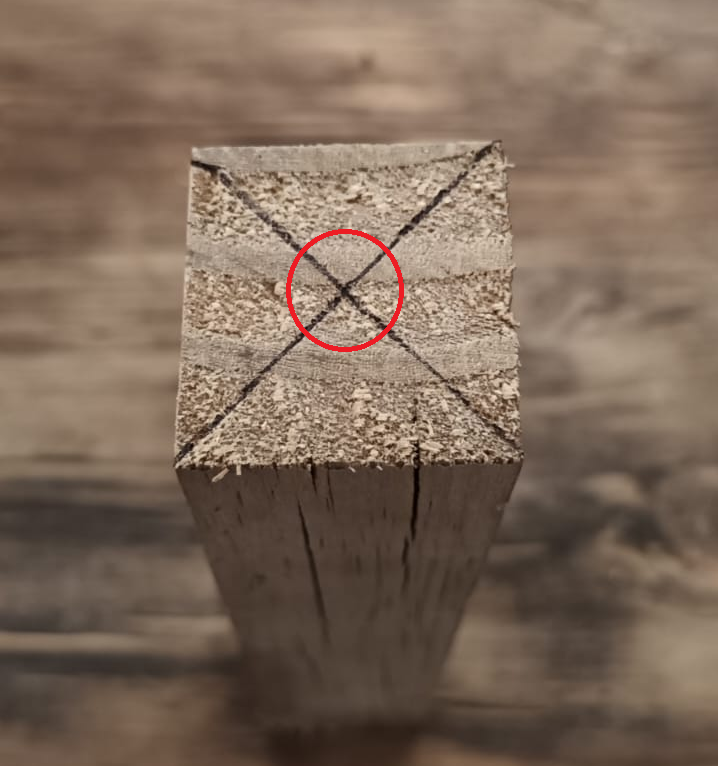
Cela marque le centre pour assurer un alignement correct.
Insérez le brut dans le mandrin :
Placez l'extrémité non marquée dans le mandrin.
Assurez-vous qu'elle repose à plat contre la surface plane intérieure des mors du mandrin.
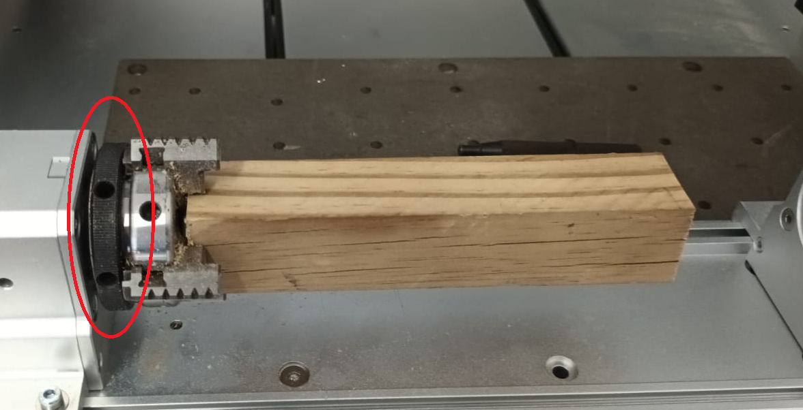
Fixez les mors du mandrin :
Serrez les mors à la main en tournant la bague noire dans le sens horaire (Figure 2).
Étape 2 : fixer la contre-pointe
Dévissez complètement la pointe tournante de la contre-pointe.
Alignez la contre-pointe avec le brut (figure 3) :
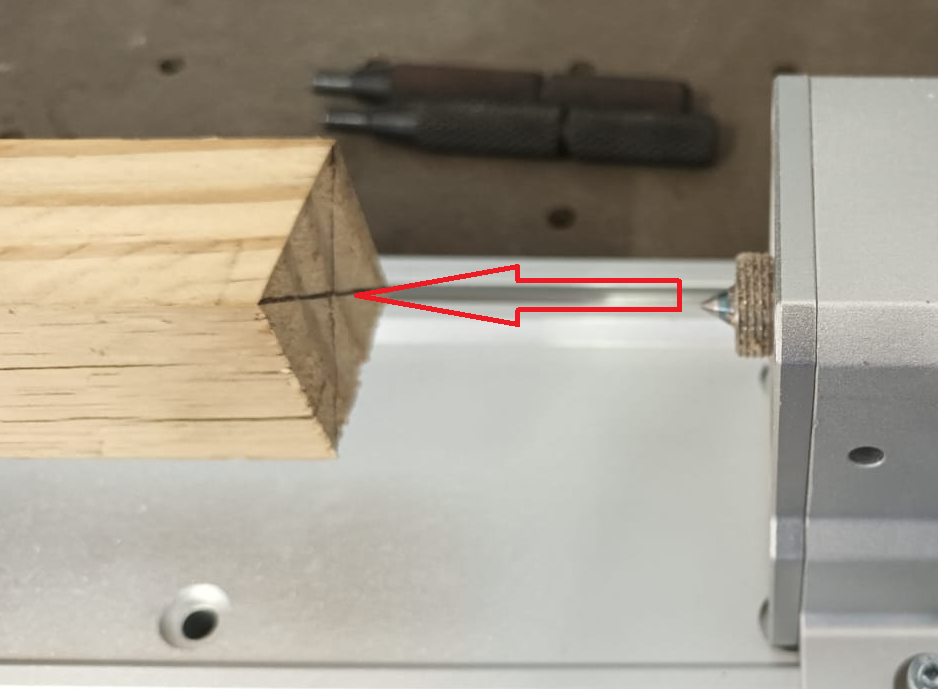
Faites glisser la contre-pointe vers l'avant jusqu'à ce que la pointe tournante touche juste le repère central (figure 4).
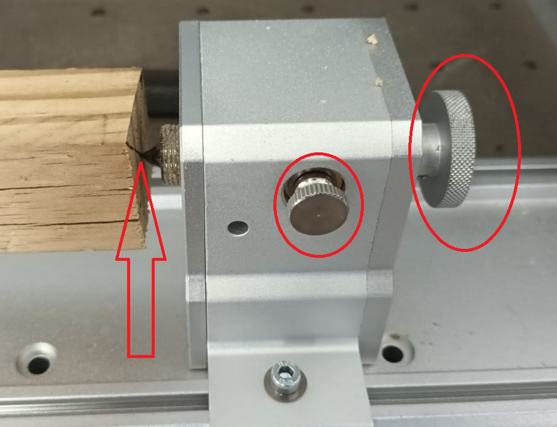
Fixez la contre-pointe :
Serrez la contre-pointe sur la base du quatrième axe pour empêcher tout mouvement.
Alignez et fixez la pointe tournante :
Réglez la vis de la pointe tournante vers l'intérieur aussi loin que possible.
Bloquez-la en serrant la vis de blocage latérale de la contre-pointe (figure 5)
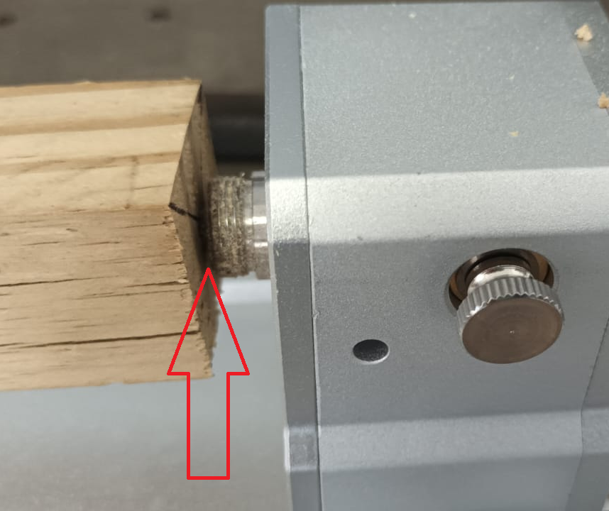
Dernière vérification de sécurité :
Fixez solidement le mandrin à l'aide des goupilles de fixation du mandrin.
Ensure that the mandrin, contre-pointe et brut doivent être complètement fixés avant de poursuivre (figure 6).
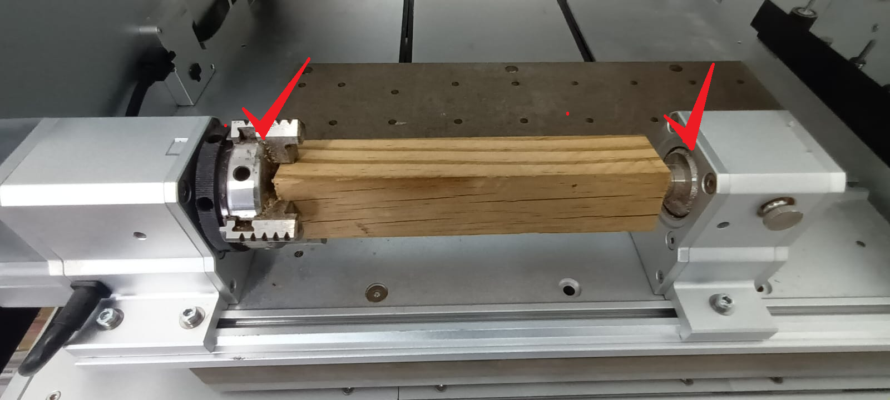
Étape 3 : régler le décalage Z de rotation
Si le brut est correctement fixé mais que le diamètre de découpe est incorrect, réglez-le Rotational Z Offset comme suit :
Créer un parcours d'outil de test
Concevez un disque circulaire d'un diamètre connu (e.g., 20mm).
Il servira de référence pour les réglages.
Téléverser et exécuter le parcours d'outil
Laissez la machine terminer la découpe du disque.
Mesurez le diamètre de découpe (figure 7)
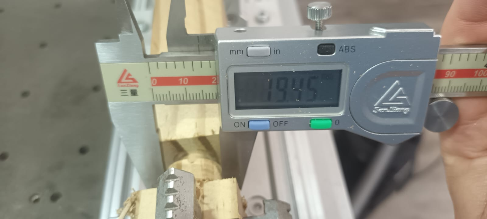
Utilisez une micromètre or pied à coulisse pour vérifier le diamètre réellement usiné.
Régler le décalage Z de rotation dans l'application Makera Controller
Ouvrez l' Application Makera Controller.
Cliquez sur le menu Tools (coin supérieur droit) (figure 8).
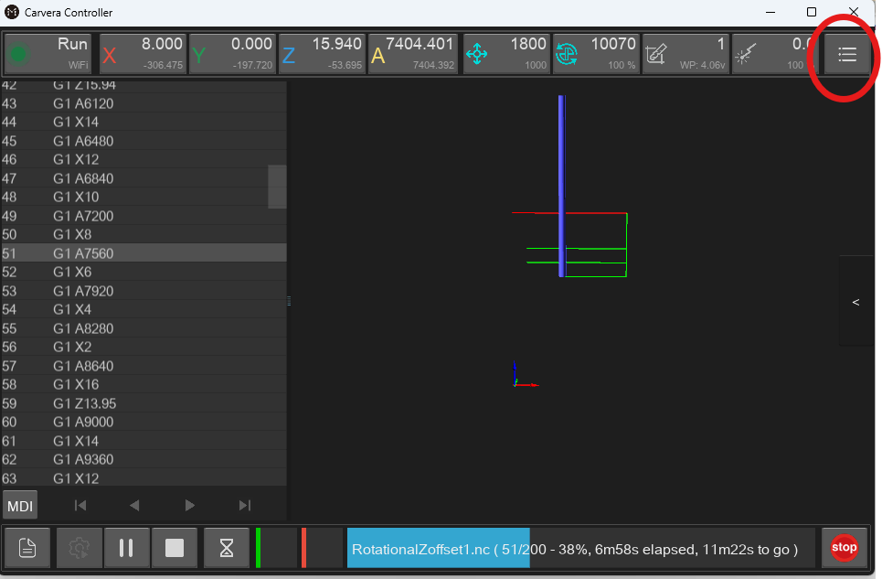
Sélectionnez Settings (icône d'engrenage, dernier élément) (figure 9).
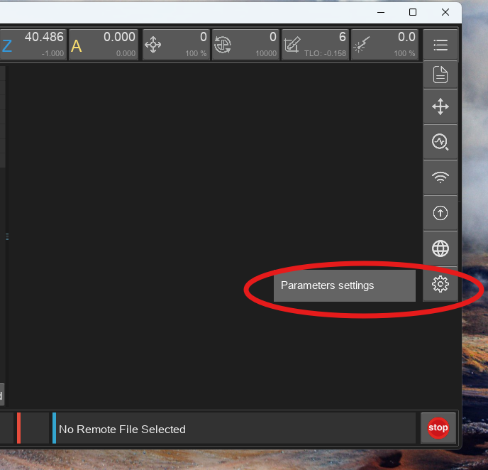
Cliquez sur Advanced Settings et recherchez Rotational Z Offset (figure 10).
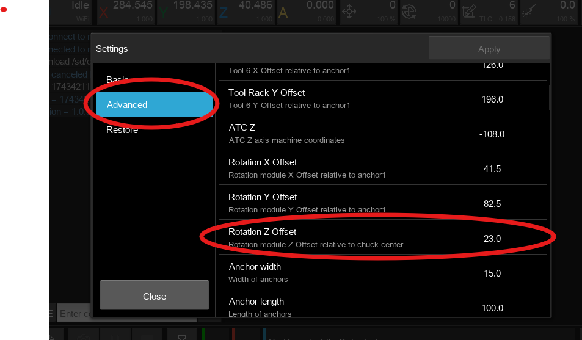
Modifier la valeur du décalage
Le décalage par défaut est 23.
Ajustez la valeur de la moitié de l'écart entre le diamètre découpé et le diamètre prévu.
Exemple :
Si le dessin spécifie 20mm, mais que la pièce usinée mesure 19.5mm, ajustez le décalage de -0.25, en changeant la valeur à 22.75.
Augmenter la valeur rend la pièce plus petite.
Diminuer la valeur rend la pièce plus grande (figure 11)
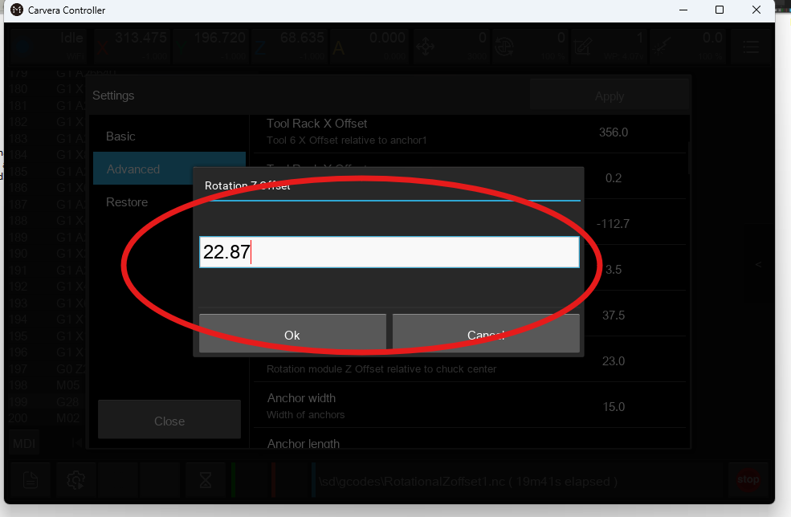
Appliquer les modifications et redémarrer
Cliquez sur Appliquer.
Une fenêtre contextuelle vous invitera à redémarrer la machine.
Redémarrez la machine pour appliquer les modifications (figure 12).
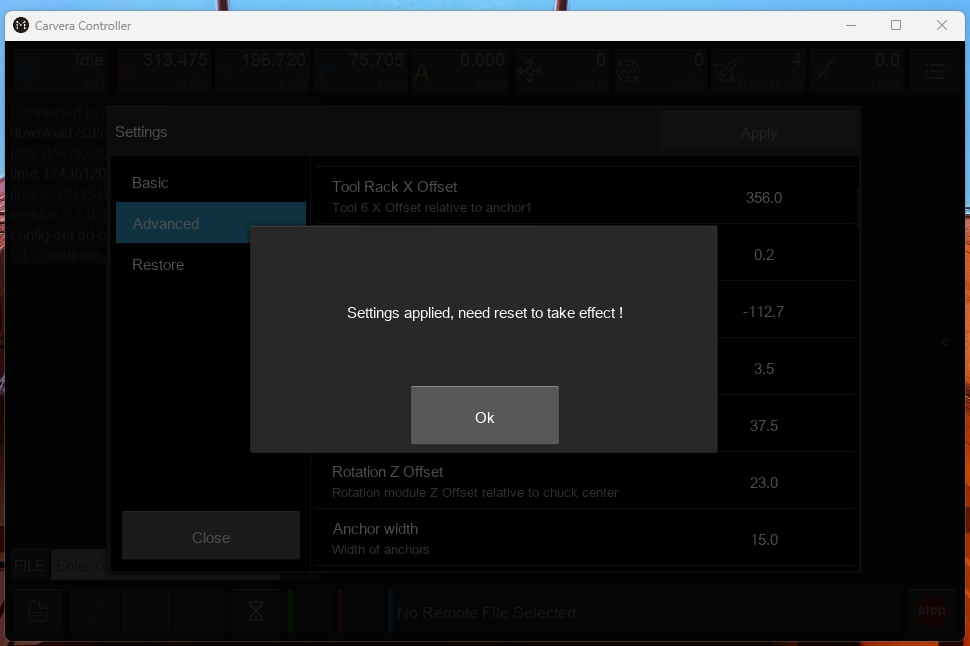
Vérifier les réglages
Après le redémarrage, revenez à Settings et vérifiez la Rotational Z Offset valeur mise à jour.
Réexécuter le G-code sur une nouvelle section du brut
Sonde du matériau avant chaque nouvel essai.
Exécutez le même parcours d'outil et vérifiez le nouveau diamètre de découpe.
Comparer les résultats et affiner si nécessaire
Mesurez le diamètre de découpe final et comparez-le au dessin d'origine (figure 13).
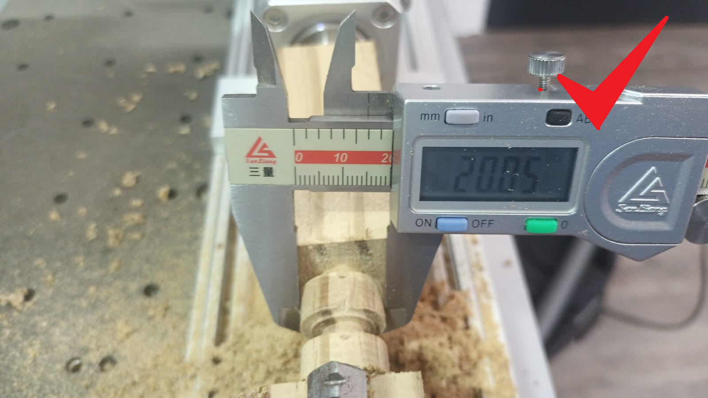
Répétez le processus de réglage jusqu'à ce que le diamètre usiné corresponde à la taille prévue.
Confirmation finale
Une fois le diamètre correctement étalonné :
✅ Le brut est solidement fixé.
✅ Le la contre-pointe et le mandrin sont serrés.
✅ Le Rotational Z Offset est correctement réglé.
✅ Le la pièce finie correspond aux dimensions du dessin.
La machine est maintenant correctement configurée pour une découpe précise de reliefs sur le quatrième axe.